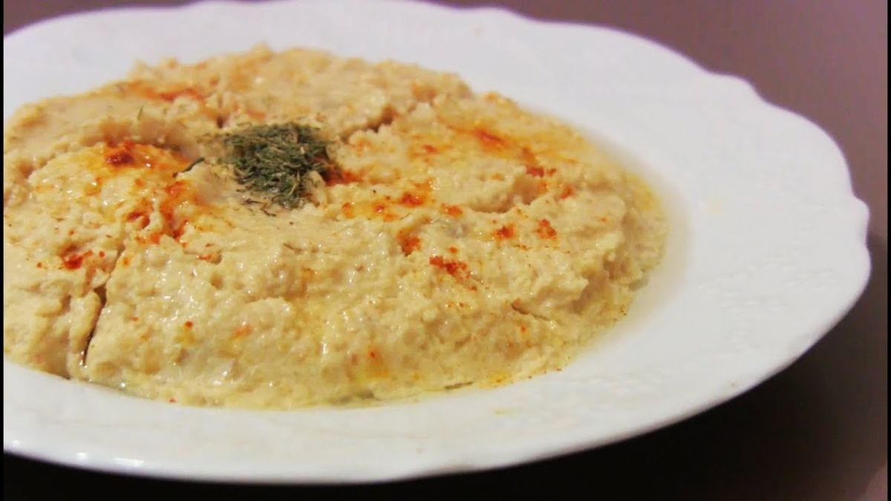

Hummus - Chickpeas with Tahini

Description
A paste of pureed chickpeas usually mixed with sesame oil or sesame paste and eaten as a dip or sandwich spread.
Ingredients
- 2 cups drained well-cooked or canned chickpeas, liquid reserved
- 1/2 cups tahini (sesame paste)
- 1/4 cups extra-virgin olive oil, also oil for the drizzling
- 2 cloves garlic, peeled, or to taste
- Salt and freshly ground black pepper to taste
- 1 tablespoon ground cumin or paprika and for garnish
- Juice of 1 lemon, plus more as needed
- Chopped fresh parsley leaves for garnish
Steps
Step 1
- Put everything except the parsley in a food processor and begin to process; add the chickpea liquid or water as needed to allow the machine to produce a smooth puree.
Step 2
- Taste and adjust the seasoning. Serve drizzled with the olive oil and sprinkled with a bit more cumin or paprika and some parsley.
Step 3